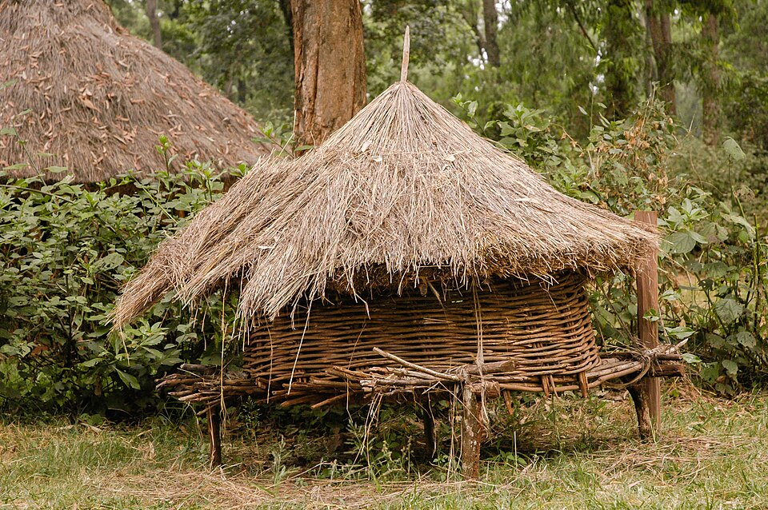
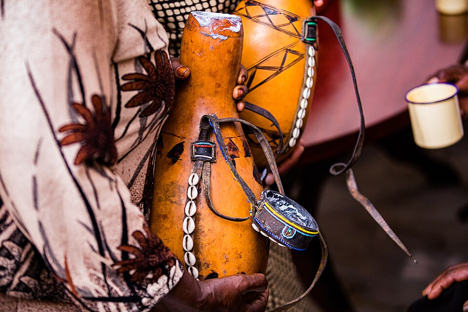
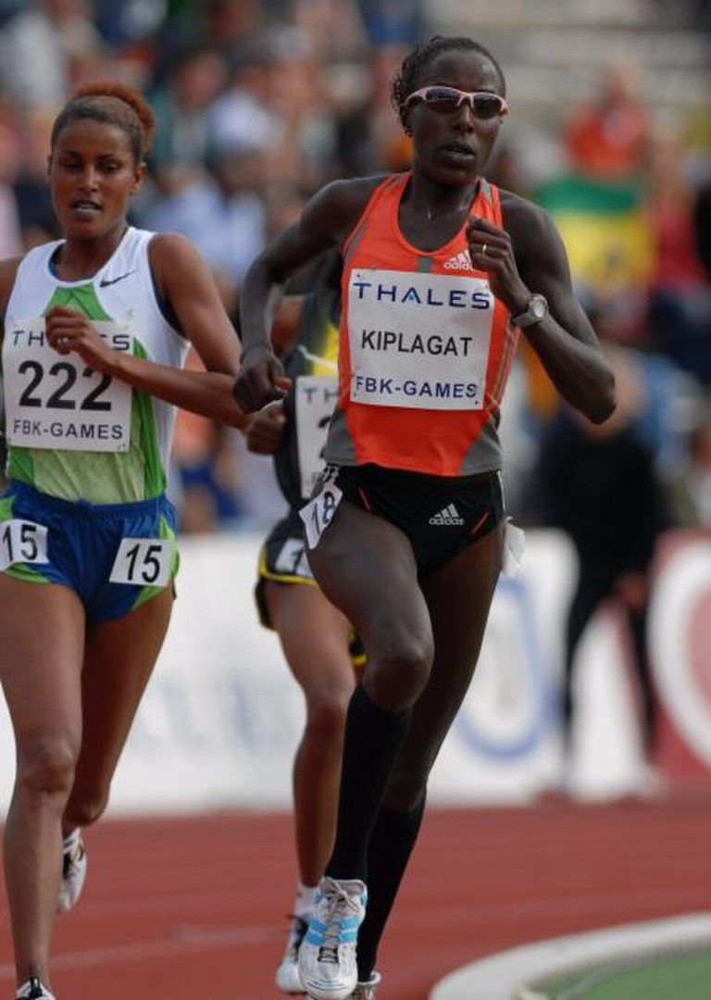

Rift Valley Highlands · 06
The Kalenjin
A highland story of endurance, sound, homesteads and movement.
A living profile
Highland knowledge and motion
From traditional homes to music and running culture, discover the many layers of Kalenjin identity.
HeartlandRift Valley HighlandsHighland escarpments and valleys
LanguagesKalenjin languagesA group of related Southern Nilotic languages
LivelihoodsFarming & livestockHighland crops, tea and cattle
LegacyEnduranceKnowledge of movement, land and training



Kalenjin heritage brings together oral tradition, agricultural knowledge, ceremony and a powerful relationship with the highland landscape. Kalenjin is an umbrella term for several related communities and languages.
What to explore
Connect the modern story of endurance with older systems of land and community knowledge.
- Highland agriculture and homestead life
- Oral traditions, ceremony and music
- Running culture as one part of a wider identity